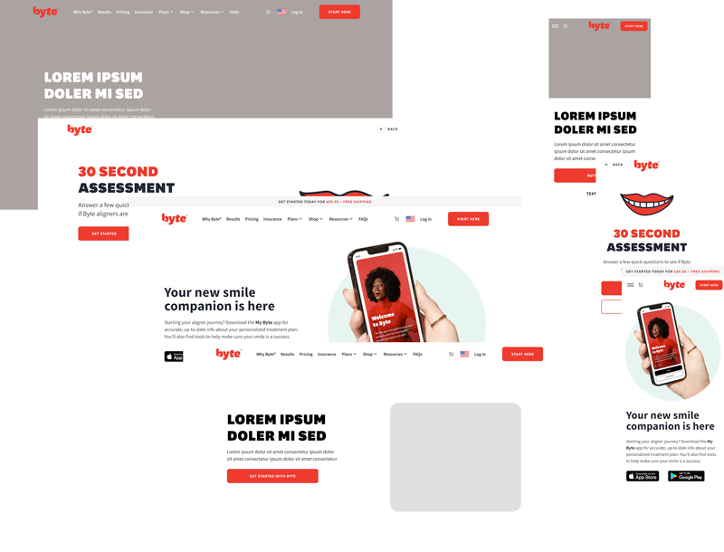

Content Model for the Hero
Decision Drivers
- The editor’s user experience
- Seperation of concerns
- Re-usability/Redundancy
- Templates/Themes
- Right combination and balance
| Background Image: | Featured Image: | |
|---|---|---|
 |
 |
 |
What makes a "hero" a "hero?"
The hero section aims to make a solid first impression that conveys the site's or page content's essence, engages users, and encourages them to explore further.
A hero should be functionally robust, fast-loading, and accessible across all devices.
What makes a "hero" a "hero?"
- Prominent Placement
- Visual Focus
- Minimal Content
- Size and Scale
Considered Options
Outcome
🟩 Dedicated Content Model
vs.🟧 Add Multiple Image Field to Content Types as Needed
🟩 Option 1: Dedicated Content Model
👍 Pros:
- Flexibility: Adaptable for future content needs beyond images, supporting various media types like videos and vector graphics.
- Metadata: Allows metadata for each media item, useful for SEO, accessibility and more.
- Separation of Concerns: Modular approach keeps media asset distinct from Contentful, aiding in maintainability and scalability.
- Reusability Across Content Types: Facilitates efficient media asset by allowing media content type to be reused, reducing redundancy.
🟩 Option 1: Dedicated Content Model
🚫 Cons:
- Implementation Time and Cost: More resource-intensive upfront due to greater complexity.
- Learning Curve: Introduces a new component that content creators and developers need to familiarize themselves with.
- Migration Efforts: May require substantial effort to migrate existing content to the new structure.
- Encounters GraphQL Errors: A multiple image query is a high-cost field, and exceeds the cost limit. BYTE-11468, a related ticket is in the backlog to address this.
🟧 Option 2: Add Multiple Image Field to Content Types as Needed
👍 Pros:
- Quick Implementation: Simpler and faster to implement by extending existing content types with a new field.
- Simplicity: Straightforward solution for projects where basic image support without advanced metadata is sufficient.
- Minimal Training Required: Leverages existing functionality, minimizing the learning curve for team members.
🟧 Option 2: Add Multiple Image Field to Content Types as Needed
🚫 Cons:
- Limited Scalability and Flexibility: Less accommodating for future enhancements or support for different media types.
- Potential for Redundancy: Lacks a centralized multiple image solution, possibly leading to duplicate entities across content types.
- Lack of Advanced Features: Forgoes potential benefits that a dedicated module might offer.
- Encounters GraphQL Errors: A multiple image query is a high-cost field, and exceeds the cost limit. BYTE-11468, a related ticket is in the backlog to address this.
Conclusion
🟩 Dedicated Content Model
🟩 Dedicated Content Model
type ContentfulEntry = T & {
__typename: string;
internalName: string;
sys: Sys;
};
🟩 Dedicated Content Model
interface FMAssetProps extends ContentfulEntry {
layout: 'stacked' | 'horizontal' | 'vertical';
options: Array<'parallax' | 'stagger'>;
fit?: 'cover' | 'contain' | 'fill';
assets: {
items: ContentfulEntry[];
};
}
const FMAsset: FC = (props) => {
return props.assets.items.map((asset, i) =>
<AssetImage key={asset.sys.id} {...asset} />
);
};
🟩 Dedicated Content Model
const AssetImage: FC = (props) => {
return <Image {...props} />;
};
🟩 Dedicated Content Model
Military Page Demo